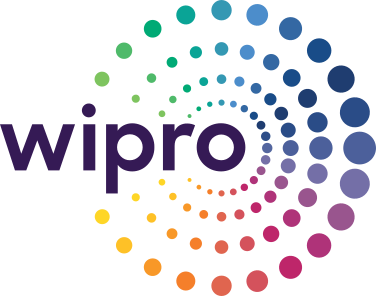
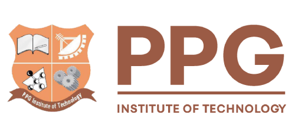

Years of focused VLSI industry experience
Bengaluru, India
VLSI · Physical Design · Methodology
Hello, I’m Deepak.
I engineer better paths from design to silicon.
Flow Methodology Engineer at Microsoft with 10 years in VLSI, focused on physical design, advanced-node EDA enablement, and agent-driven solutions for the next generation of design flows.
Physical Design◆
Place & Route◆
VLSI Methodology◆
EDA Workflows◆
Design Automation◆
Semiconductor Engineering◆
◆
◆
◆
◆
◆
◆
Profile
Technical depth.
Practical outcomes.
I bring 10 years of VLSI experience across block implementation, application engineering, flow methodology, and AI-driven EDA development.
I’m interested in the difficult middle of semiconductor engineering: where sophisticated tools, design intent, and production constraints have to work together reliably. My work centers on developing methods that make implementation flows clearer, more efficient, and easier for engineering teams to scale.
Before entering VLSI, I worked in renewable-energy technical support at CARES Renewables. That experience is distinct from my VLSI career and built an early foundation in systems thinking and practical troubleshooting.
Deep focus on place-and-route methodology
Tool flows, automation, and scalable processes
Goal: help teams deliver better silicon
Experience
Career journey
Ten years across physical design implementation, advanced-node customer enablement, and AI-driven flow methodology.

Current
Microsoft
Flow Methodology Engineer
Steering the direction of AI-driven EDA flow development as AI becomes part of production design methodology. Developing agent-based solutions to debug user issues, identify result-quality opportunities, and make complex flows more intelligent and autonomous.
AI-driven EDA
Debug Agents
Result Quality
Flow Direction
Previous
Synopsys Inc.
Application Engineer
Helped customers establish physical design flows for the latest technology nodes and achieve strong implementation results. Piloted customer activities, treated their design challenges as my own, and delivered solutions from the EDA methodology and tool perspective.
Advanced Nodes
Flow Enablement
Customer Pilots
EDA Solutions

Foundation
Wipro Limited
Design Engineer
Drove physical design blocks through implementation and closure, balancing performance, power, and area to achieve the best possible PPA for each design.
Block Closure
Performance
Power
Area
Early career
CARES Renewables
Technical Support
Worked in renewable-energy technical support before moving into VLSI. This role is part of my broader engineering journey but is not included in my 10 years of VLSI experience.
Renewable Energy
Technical Support
Troubleshooting
Expertise
What I bring to
the design table
Primary focus
AI-driven Physical Design Methodology
Connecting physical design expertise with agent-based automation to create more intelligent, responsive EDA flows.
VLSI Implementation
Hands-on experience closing physical design blocks while balancing performance, power, and area.
Methodology Development
Steering reusable flow strategies for evolving technologies, design requirements, and result-quality goals.
Agent-driven Automation
Building agents that investigate user issues, support debugging, and identify opportunities to improve quality.
Technical Collaboration
Owning customer and user challenges end-to-end and translating them into practical EDA solutions.
Projects & Publication
Early ideas that became working systems.
Academic work spanning neural networks, embedded systems, communication, automation, and power-system measurement.
Publication · August 4, 2016
Frequency Estimation of Power System Using CMAC Artificial Neural Network
Models power-system frequency estimation as an optimization problem and applies a CMAC artificial neural network to reduce estimation error for distorted sinusoidal waveforms.May 2015 — December 2015
CMAC Neural Network Frequency Estimation
Developed a power-system frequency estimation approach using an artificial neural network, with future scope for ASIC implementation.January 2014 — April 2014
EB Billing and Fault Notification
Built a PIC-microcontroller-based electricity billing and fault notification system with condition monitoring and GSM communication.June 2012 — November 2012
Automatic Irrigation System
Created an automatic irrigation concept that used land resistance as the sensing input for watering decisions.How I work
Better methodology starts with better questions.
I approach engineering problems as connected systems—not isolated tool commands—so solutions remain useful beyond a single design.
Understand
Clarify design intent, constraints, and the actual source of engineering friction before changing the flow.
Simplify
Turn complicated behavior into clear models, measurable checks, and decisions teams can reason about.
Automate
Encode proven solutions into repeatable workflows that reduce manual effort and prevent recurring errors.
Scale
Validate across real design contexts and make the method easy for other engineers to adopt with confidence.
Education
Built on a strong engineering foundation.
Postgraduate
Amrita Vishwa Vidyapeetham
Qualification
Master’s Degree in VLSI Design

Undergraduate
PPG Institute of Technology
Anna UniversityQualification
Bachelor of Engineering in Electrical and Electronics Engineering
Giving Back
Engineering progress should uplift communities.
Beyond technology, I believe meaningful progress includes helping others gain access to opportunities that can shape their future.
Community Member
Jeeva Naadi Charitable Social Community
Supporting the community’s educational cause and its work to create better learning opportunities.Open Work
Building in public on GitHub.
Explore my public repositories, experiments, and tools. This collection updates automatically as new work is published.
View GitHub profileContact
Let’s talk about silicon, systems, and hard problems.
The best place to reach me is LinkedIn. I’m always interested in thoughtful conversations about VLSI, physical design methodology, and engineering innovation.
Connect on LinkedIn